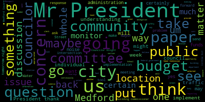
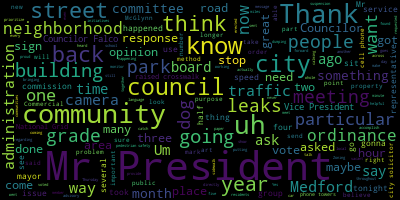

AI-generated transcript of Medford, MA City Council - June 13, 2017 [Livestream] (Unofficially provided by MT)
English | español | português | 中国人 | kreyol ayisyen | tiếng việt | ខ្មែរ | русский | عربي | 한국인
Back to all transcripts
[Caraviello]: 23rd regular meeting of the Medford City Council, June 13th, 2017. Mr. Clerk, please call the roll.
[SPEAKER_06]: Councilor Dello Russo? Councilor Falco? Present. Councilor Knight? Councilor Lungo-Koehn? Present. Vice President Marks? Present. Councilor Stantelli? Present. President Caraviello?
[Caraviello]: Present. Please rise and salute the flag. and to the flag of the United States of America, and to the republic for which it stands, one nation under God, indivisible, with liberty and justice for all. Mr. Clerk, if you could please mark Councilor Knight as being present. Motions, orders, or resolutions. 17-519, offered by Councilor Knight, be it resolved that the City Administration report to the Council the following, a listing of all collective bargaining agreements entered into by the School Department and the City of Bedford with employee organizations, including the effective dates of each agreement and the current status of any ongoing successor agreement negotiations. Councilor Knight,
[Knight]: Mr. President, thank you very much. As we've started our budget hearings and we've discussed a lot about personal and ordinary expenses in the City of Medford's budget, one of the things that we continuously discuss is the fact that the majority of the funds that are being appropriated in the FY18 budget are for negotiated salary increases and contractual obligations. As such, Mr. President, I'm requesting that the administration provide us with some documentation relative to the status thereof related to collective bargaining agreements between employee organizations in the city and the school department so that we have a better understanding as to where they are and what direction these negotiations are going in.
[Caraviello]: Thank you. On the motion by Councilor Knight, seconded by Councilor Falco. All those in favor? Motion passes. 17-521 offered by Councilor Lungo-Koehn. Be it resolved that the Medford City Council set up a Committee of the Whole meeting to discuss the implementation of an ordinance to help fix all level three natural gas leaks and hold the gas companies accountable for better surveying, reporting, planning, in remediation of such leaks. Councilor Lungo-Koehn.
[Lungo-Koehn]: Thank you, President Caraviello. This is an issue that the city of Boston took up not too long ago. And I think after reading about it, after discussing it with our environmental, somebody from our environmental committee, I think it's something that we definitely could benefit from having it in Medford. I know we have with the engineer's office, potentially getting a new traffic engineer that may help with our issue that we have with the utility companies ripping up our roads and replacing them the way they should. This is also maybe a third issue that potentially could be worked on. This ordinance, which I have the city of Boston's ordinance, which I've reviewed and read, it would entail Any time the city of Medford opens up a street for any reason or any construction project, any time the street is opened, our utility companies, National Grid, Eversource, would be invited or asked to come and review that portion of the road. And there would be a hope that they would survey and figure out where there are any potential leaks. Boston estimates they have thousands of gas leaks in their community, and this is a way to reduce that number. We're a city that's obviously smaller than Boston, but we do have several, many, many gas leaks that I think need to be looked into, and we need to make that a priority. It's not good for the environment. It's not good for public health. And obviously, so many more reasons why we should be getting on top of these gas leaks.
[Caraviello]: Thank you. On the motion by Councilor Longo-Kearns, seconded by Councilor Falco. All those in favor?
[Lungo-Koehn]: If I could before the roll is called. Councilor Longo-Kearns. Yeah, I just ask that we, I'm going to send around, I'll email all the councilors the city of Boston's ordinance so that we could maybe take the summer to review. And then I would just ask that a committee of the whole meeting be set up in September. And hopefully once we review it, we can implement this. There's so many other facets to the ordinance. It's about nine pages long, but not only fixing the leaks, but within the ordinance, we can also mandate that anything National Grid or Eversource or any gas company provides to DPU, the Massachusetts Department of Public Utilities, that they provide to the city of Medford. So our engineer's office, our environment office can use that and help, obviously, do what we need to do alleviate the many, many leaks that we have in the community. So it goes into depth and I won't go into it tonight, but I definitely would appreciate if my colleagues would read it so we can go through it and in the early fall and try to get this implemented as soon as we can. Thank you.
[Caraviello]: Vice President Mox.
[Marks]: Thank you, Mr. President. I want to thank my council colleague for bringing this up. Um, I brought up an issue, uh, probably about a month and a half ago regarding, uh, the meeting that took place on March 20th in this city, uh, where national grid had a community public meeting at the McGlynn middle school and, um, come to find out, Mr. President. Currently, according to the figures we received from National Grid, we have no grade 1 or grade 2 leaks in the community. Grade 1 is eminent threat of explosion. Grade 2 threatens health or property. And grade 3, we have over 260 leaks in this community. And even though it's no threat to health and property, Mr. President, there still are leaks in the community. And these particular leaks over time naturally become larger leaks. And from what I found out from National Grid is that they currently don't prioritize grade 3 leaks, which we have over 260, because they receive no reimbursement on grade 3 leaks. So they prioritize grade 1 and grade 2 leaks and nothing on grade 3. If we can make it part of the report also, Mr. President, and I think it was part of the report several months back. I don't know if we got a response or not. I don't recall seeing a response. What we can do with the grade three leaks, should we be petitioning National Grid, even though they don't prioritize them, that they come into the community and start working on these low-level grade three leaks, which to me is alarming when you have close to 300 leaks that they're aware of in the community. And those leaks could be decades old. And, you know, I'm concerned about that equally. I want to thank my colleague for putting this on tonight. Thank you. Council Member O'Karn.
[Lungo-Koehn]: Thank you, and I thank Councilor Marks for his comments. I think we probably would see a level of times two or three of that 260 number, and that's very concerning, and I agree. And I think this ordinance, if we implement it, it would give it some teeth, because if a gas company refuses to survey an open site, or doesn't repair a leak found at the site, the city will then have the right to deny permits for other street digging they apply for. And I think it goes in conjunction with the committee of the whole meeting we had a week or two ago with the engineer's office, where how can we have oversight and how can we put more teeth into it when they're not doing the right thing? And this would be another avenue to make sure not only are they repairing our street properly when they dig it up, but also come to every single project that we're doing and make sure these level three leaks are fixed and fixed accordingly. And I think it's a tool that the engineer's office would hopefully, especially getting a new position, maybe including this job title in that position, I think we can make a huge dent in these level three leaks that maybe they're not affecting life, but they're killing trees. Gas leaks kill trees, it kills vegetation, and that's all outlined in the Boston City of Boston's ordinance. And I think it's something that we need to, we've got a lot done this council. And I think this is one extra thing that we can include since we're on the utility companies. This is one extra thing that we can use to not only for the council to have some teeth because we're allowing for certain permits, but the DPW and the engineer's office, it definitely will allow them to, you know, if they, if we can get on top of it, we can make a huge dent in a level three leaks as Boston's doing. The issue with Boston and other cities and towns implementing this is that National Grid and Eversource are going to focus more on the communities that have these ordinances in place. So come time when we're one of the only ones that don't have it, we'll be down on the totem pole of when they're going to fix the leaks we do have. So I think that this is instrumental in staying on top of it and staying in the 2017 plus time frame of what needs to be done to cure the problem, so hopefully we can get this done in the fall and move forward.
[Caraviello]: Thank you. On the motion by Councilor Lingo-Kearns.
[Lungo-Koehn]: Roll call, please.
[Caraviello]: Seconded by Councilor Falco. Roll call vote has been requested. Mr. Clerk, please call the roll.
[SPEAKER_06]: Councilor Falaruso? Yes. Councilor Falco?
[Dello Russo]: Yes.
[SPEAKER_06]: Councilor Knight? Yes. Councilor Lingo-Kearns? Yes. Vice President Marks? Yes. Councilor Scarpelli? Yes.
[Caraviello]: Yes, seven in the affirmative, none in the negative. Motion passes. 17-522, offered by Councilor Lengel-Kern. Be it resolved that the office of the city solicitor report back to the Medford City Council with regards to how many claims have been received in 2016 and 17 as it relates to damage to persons and or property due to potholes, sunken manholes, grates, and the like. Councilor Lengel-Kern.
[Lungo-Koehn]: Thank you, President Caraviello. If I could just I'm asking for 2016, 2017. I just want to see the difference in claims from our law department. I know that we did meet with Solicitor Rumley yesterday, and he did give us some insight, numbers off the top of his head, with regards to how many claims have been put in. And I think that was great that he was on top of it. I believe it was about 30 claims from pothole and street defects and nine personal injury claims from potholes, two of which were in addition to were personal injuries from people that were on bicycles that obviously went through a pothole and got injured. So I wanted to know that considering how hard our DPW is working with regards to how many potholes we do have out there. I don't know if we had a bad winter, but they're everywhere. They're getting filled, but there are a number more. And I know we discussed with the DPW contracting out. So I wanted to really see within this budget how it evens out claims versus filling versus getting a contractor so that we can make an educated decision come next week or the week after when we have to make recommendations and approve or disprove the budget. So I move approval, ask for a roll call vote.
[Caraviello]: Thank you. On the motion by Councilor Lungo-Koehn, seconded by Councilor Scapelli. Mr. Clerk, roll call has been requested.
[SPEAKER_06]: Councilor Dello Russo? No. Councilor Falco? Yes. Yes. Yes. Yes.
[Caraviello]: Yes. Six in the affirmative. One in the negative motion passes. Motion by Councilor Falco is to take a paper out of order. Seconded by Councilor Dello Russo. 17-525. 17, 525. 17, 525, offered by Councilor Falco. Whereas, continuous speeding and careless driving poses a significant problem for the residents of Fern Road. Be it resolved that the Medford DPW place a temporary speed bump on the lower end of Fern Road and that the Medford Police Department increase patrols in the area in the interest of public safety. Councilor Falco.
[Falco]: Thank you, Mr. President. had the opportunity last week to attend the monthly community police meeting down at the Medford Police Station. And once again, they had a nice crowd, probably about 25, 30 people. And there was about 10 people from Fern Road that attended. And they had major issues on that road with regard to traffic and speeding. And at the end of Fern Road is the intersection of Fulton Spring Road and Vista Ave and the other side of Fern Road. It's a four-way stop. And it's also a location for a bus stop. And the traffic in that area in the morning and in the evening is really, really bad with people flying through the stop sign and then progressing down towards the Felsway. And the speeding is really out of control. And the residents that were there that night expressed that. And so I just wanted to ask for increased patrols on that street. And if we could add a temporary speed bump to that street as well. It came up that night. Chief Sacco said he had no problems with it. He was in favor of it. And since I wrote this resolution, I've also talked to Brian Kearns as well. And I believe Sergeant Hartnett was going up to look at the situation today. So that's a little bit of an update. But there are actually a couple of residents here that would like to speak on this issue.
[Caraviello]: Good evening. Name and address for the record, please.
[Ronzio]: My name is Janice Ronzio. I live at 66 Fern Road.
[Seifert]: And my name is Judy Seifert, and I live at 60 Fern Road.
[Ronzio]: Welcome.
[Seifert]: We're neighbors.
[Ronzio]: First of all, thank you for allowing us to speak. And we'd love to thank Councilor Falco for all his help. He's been right there with us trying to assist us. This has been an ongoing problem for years. My children are now in their 30s. And when they were little, toddlers, I had signs put up on the street, you know, slow signs. So that was 37 years ago. So this is something that's not happened overnight, but it's been going on for a long time. And it's at the point now where it's just really out of control. They're blowing through the four-way stop sign. There's a bus stop, as Councilor Falco said. I mean, if I had kids going to get on the bus, I wouldn't want them being up there by themselves. That's how bad it is up there. And coming down Fern Road, what they're doing is the traffic, and to avoid Fulton Street in the morning, because of the light that backs up all the way up Fulton, they're coming down Fern Road and then coming out onto the Felsway, and they're trying to get out on the Felsway, and that's backed up. So we had gone to a couple of police meetings and expressed to the chief that we would like something done. And Thursday, the day after the police meeting, there was a police officer up at the corner and he was pulling cars over for blowing the stop sign. And they also stopped somebody near mine and Judy's house that was speeding down the street. So we're very appreciative that we're able to get something done at this point. And we also are hoping that the police could make some more presence. I mean, we know that they can't be there all the time. We understand that, you know, there's problems everywhere. We get that. But if we could just for the next couple of weeks until school gets out at least, um, have a police presence in the morning, um, when it's busy, people going to work, going to school. And then, you know, later afternoon, like suppertime when people are coming home from work, um, to just maybe be there a couple of times a week for the next few weeks just to show their presence so that people in the neighborhood or whoever's traveling will understand that something is being done to resolve this. So we do appreciate all the help that we're getting. Councilor Falco, thank you very much. And my neighbors, we have a great neighborhood. And a couple of years ago, we actually had a problem with a car coming up the street. There was a young kid texting. flying up the street and going up the hill. Fern Road's a pretty steep hill. And he was going at a pretty good speed. And he knocked a tree over on the sidewalk. So luckily, there was nobody there on the sidewalk at the time. But this is just an idea of what goes on daily on that street. People think Fern Road is like a fantasy world, that nothing happens up there. But it's really pretty bad. And we're going to do what we can do to help alleviate the problem, too, if we have to put the signs up, you know, the signs that say drive as if your children lived here. You know, we're willing to buy those and put them on our lawns, whatever we have to do to help. But we do appreciate all the help that we're getting here. Thank you. Thank you.
[Seifert]: We're also aware that when that new traffic engineer is hired, we'd certainly like that person to take a look because this is like, for now, this would really make a big difference. But I think there's probably ways that we could solve this problem more permanently. Because I don't know if the speed bumps are temporary or not.
[Falco]: I think they are so It's a temporary speed bump that they pull up in the winter because of the plows they can't keep it down year-round but It's definitely I think Something that would help in this situation. I mean we would I took a walk I live right around the corner and I took a walk down the street and met with the residents on Saturday and And it's interesting, there's a pothole in the street. And some of them are like, don't fill the pothole because it slows down the traffic.
[Ronzio]: Let's see if it gets any bigger. Put a couple of cones around just to slow some people down.
[Falco]: And that really shouldn't be the solution. We should make sure that we fill the pothole and slow down traffic. So we're hoping that putting in that temporary speed bump would help slow down the traffic, help drivers realize that, you know what, this is a busy neighborhood. There's a lot of people, a lot of cars. This is a school bus stop close by. People have to drive safely. And so I basically would ask a move for approval at this point. Thank you. And thank you for your support. Thank you. Thank you very much. Thank you. Thank you.
[Caraviello]: Councilor Scarpelli.
[Scarpelli]: I thank fellow Councilor John Falco for bringing that up. If I can amend that, if we can maybe add the digital speed monitor, maybe to slow people down. Also, I know that Again, we've worked both Councilor Falco and Councilor Kern have been working with Sergeant Hartnett on the traffic issues as that's a major cut through, especially with the future work that's being done up there. I think that might be something we need to rekindle for another subcommittee meeting with the hospital site and then bring Officer Hartnett. I know they did a report, a traffic study that counted the cars that went through that area and it was pretty It was pretty astronomical. So I think if we could put that, the, the machine there, if we can ask the chief to put that up there so people can see the speed limit and maybe that could deter some of the speeding. But thank you again for this resolution. Thank you.
[Caraviello]: Vice President Marks.
[Marks]: Thank you, Mr. President. And I want to thank Councilor Falco also. This seems to be a recurring theme in the community. that we're hearing about pedestrian safety, cars speeding throughout our neighborhood and on our neighborhood streets. I could just tell you firsthand, Mr. President, that when we implemented the pilot program for raised crosswalks, I personally like raised crosswalks better than a speed bump. Speed bumps are very temporary in nature, and I don't think they accomplish the same goal as a raised crosswalk. When we did the pilot program, Mr. President, back some four years ago, Mayor McGlynn at the time said we were going to do three raised crosswalks. And that was back some four years ago. We've only implemented one on Winthrop Street. But I could tell you firsthand that a raised crosswalk in that particular neighborhood and in many other neighborhoods would work wonders on traffic calming, slowing down traffic, in particular areas. Now that coupled with widening sidewalks, putting up blinking lights, increasing signage in the community, that definitely has an impact also. But we, you know, we can't sit back and talk about complete streets. We've heard complete streets over and over again. I read articles in the paper. That's great, we're making some initiatives on some of the major roads and with $500,000 we're hitting up several neighborhoods and providing some traffic calming initiatives. But we also have to, we can't ignore the neighborhoods. because I've been on the council a number of years. The concerns I hear over and over again, a lot of them are on main roads, but much, much more, Mr. President, are in the neighborhoods. And that's what I'm hearing over and over again. And this is not rocket science. There's ways of calming traffic down. There's very simple ways, there's very cost effective ways of doing it. Sometimes it's merely just, I know the city of Cambridge does it, they paint what looks like a 3D mural in the street. So when a car approaches, it looks like there's something impeding them from going forward because of this 3D image that's in the road. And it's a very unique way of having at least people that are driving to be alert when they come up to an area. And it's not expensive to do, Mr. President. And, you know, in my opinion, we fall short of the mark in this community when it comes to pedestrian safety. And in my opinion, Mr. President, you know, There's money out there. We have over $8 million in free cash to move some of these initiatives forward in the neighborhoods. And it'll benefit not only the community in general, Mr. President, it'll send a message out to the people driving on our streets, many of which are just cutting through, Mr. President, that we're not going to tolerate this any longer. And it sends a message out, Mr. President, when you take back your roads. Several months back, this council voted to reduce the speed limit from 30 miles an hour to 25 miles an hour on all non-posted roads. We have yet to see, that was several months back, one sign be erected that says the new speed limit of 25 miles an hour on our streets. So, again, we've done a pork job in communicating what was a vote of this council and eventually passed by the Traffic Commission. And also, Mr. President, something that would send a message to people that are coming through our community that you have to reduce speed when you come onto Medford streets. So I appreciate Councilor Falco for bringing this up tonight, Mr. President. You know, I hope more is done with this new traffic engineer that's going to be approved in the budget to really address neighborhood concerns of improvement of public safety and pedestrian safety in our community. Thank you, Mr. President. Thank you, Mr. Vice President.
[Caraviello]: Councilor Lungo-Koehn.
[Lungo-Koehn]: Thank you, President Caraviello. I want to thank Councilor Falco for bringing this forward and I wanted to second the resolve and just highlight a few points. I was at the Traffic Commission meeting with you, President Caraviello, today. There was speeding on Forest Street was on the agenda. And then I was, I wasn't aware of that. And then I was there for the South Street speeding issue. So this is happening all over our community and we just have to keep on top of it. And street by street, we need to, and hopefully the traffic engineer will do that, street by street, problem area by problem area, we need to figure out ways to slow down the traffic. widening sidewalks is going on up near the Brooks School, simple signage that can be put up. We need to do this throughout our community, and this obviously is a problem spot. So I definitely am happy that we're going to try to move forward on this. And what is a positive note is that Sergeant Hartnett and the Traffic Division are working hard. I was driving down South Street yesterday, and I see Sergeant Hartnett out with a little machine. And I pulled over and I said, what are you doing? I guess we have new laser guns that 10 officers have been trained in recently. I think he said last week. So I thought that was very positive. And he said the radar guns that they purchased are coming in within the next several weeks. Also 200 signs, we were in the traffic meeting today requesting that the 25 miles an hour signs be posted. and changed out. From what I understand, they ordered 200. They're going to do, hopefully, our main thoroughfares first and any points entering the city. But hopefully more are ordered. We can switch out those signs sooner than later. And Councilor Scarpelli brought it up, too, that the monitor sign, those signs, we've ordered two. And those are coming in very soon. And those need to be, I said it before, we need a list of everywhere that people are complaining about and put it there. It needs to be, those two need to be utilized all the time so that we can slow down the traffic. So I move, I second the resolve. Just wanted to note some positive points because we have been involved in approving them and the spending of the money to approve them. And I'm glad we have a staff in the traffic division that we are now seeing out and utilizing these tools to hopefully make it, the streets safer.
[Marks]: Thank you. Vice President Marks. Just if I could amend the paper, if Councilor Falco doesn't mind, just popped in my head. Doonan Street is a four-way stop. I'm getting complaints from neighbors that no one is actually adhering to the four-way stop at all on Doonan, and people just going by without coming to a stop at all. So if we could have Sergeant Hartnett in the Traffic Division go out and take a look at that particular area, Mr. President, that would be helpful. Thank you. Yes, yes. It's a four-way stop.
[Caraviello]: On the motion by Councilor Falco, seconded by Councilor Lungo-Koehn, as amended by Councilor Marks. All those in favor? I'm sorry? In? Amended by Councilor Scapelli. All those in favor? Motion passes. 17-523, offered by Councilor Lungo-Koehn. Be it resolved that the Medford City Council send a written communication to Massport requesting that they- Are we still under suspension?
[Marks]: Are we still under suspension?
[Caraviello]: Uh, we just went out of order. That's all we wrote. We just went out of order.
[Marks]: Right. Can I add something to the suspension while we're talking while we're under a suspension and vice president marks. Thank you, Mr. This is an important item. That's the only reason why I wanted to bring it up. Um, several weeks back, uh, through this council, we requested that the city solicitor talk to Paul Moki, the building commissioner, and also Ed Finn regarding a proposed wireless communication ordinance that was proposed back in 2011. uh, before this method city council. And, uh, we got a response in our packet. I think everyone has a copy tonight of, uh, the ordinance that was drafted back in 2011. Uh, this ordinance also includes, uh, language that was inserted by a national grid at the time, uh, to amend our ordinance, Mr. President, to allow wireless communication on the polls. But this ordinance, Mr. President, is directly related to what many people may have saw on the local news just recently. The MBTA right now is trying to generate some additional revenue. And they're providing a service to their commuter rail customers that they'll be able to have internet access on the train for a nominal fee, I guess. And in order to provide that service, they need to erect cell phone towers throughout many communities that the commuter rail goes through. And I happened to catch it on Channel 5, and this council voted on it actually a couple months even prior to it coming up. But most of the communities where the commuter rail goes through, they're going to be erecting cell phone towers. In the city of Medford, there's already two requests. for cell phone towers, one on Tyler Ave and one on Charnwood Road, which are directly within neighborhoods, Mr. President. And the ordinance that was offered back in 2011 would prohibit cell phone towers from being erected in any area except for industrial and commercial zones. And right now, all you need is a building permit and an electrical permit. and you can erect a 74-foot cell tower in your backyard. It's as easy as that. So the ordinance, Mr. President, which I think we have to meet pretty immediately on, I'd ask that it go to the subcommittee on zoning and ordinance, or unless the council sees fit to have a committee of the whole on it, I would venture to say this language is ready to go. This language, in my opinion, has been vetted out thoroughly. I think it does deserve to be vetted out more by this council. But at this point, Mr. President, I would ask, through a vote of this council, that this particular correspondence dated June 8th from the city solicitor regarding wireless communication and facility ordinance be sent to either the Zoning and Ordinance Subcommittee or Committee of the Whole, Mr. President, for further discussion and quick action, because this is a very important issue. I would take your recommendation, Mr. President. We'll do the best we see if we can get it done before the summer session. Can we take a vote on that, Mr. President? This be sent because it's a paper that... Yes, we can. On the motion by Councilor... Roll call vote, Mr. President.
[Caraviello]: Councilor Knight.
[Knight]: Mr. President, the committee has decided that they want to go to the committee of the whole. That's fine. I just wanted to inform the delegation that we had some preliminary discussions this evening and early last week about setting up a summer schedule for zoning and ordinance to address some of the papers that are in committee. However, if the council feels as though we should go to a committee of the whole first, that's fine with me.
[Caraviello]: With time is of the essence on this, maybe we say we'll get this done quicker. Whatever the body wants to do. Thank you. On the motion by Councilor Marks, seconded by Councilor Naix, roll call vote has been requested.
[SPEAKER_06]: Councilor Dello Russo. Councilor Falco? Yes. Councilor Knight? Yes. Councilor Lungo-Koehn?
[Lungo-Koehn]: Yes.
[SPEAKER_06]: Vice-President Marks? Yes. Councilor Scarpelli? Yes. Vice-President Caraviello?
[Caraviello]: Yes. Six in the affirmative, one absent. Motion to revert back to regular order. 17-523 offered by Councilor Lungo-Koehn. Be it resolved that the Medford City Council send a written communication to Massport requesting that they provide the city of Medford with a noise monitor to be placed above the Andrews School as well as the Medford Heights. Be it further resolved that the letter be sent from the city, Medford City Council to all of our state delegation requesting that they contact Massport and request that additional noise monitors within the community. Councilor Lungo-Koehn.
[Lungo-Koehn]: Thank you. President Caraviello, I would just first like to amend this and also request that there be a noise monitor in South Medford. Over the last several weeks, South Medford has picked up in flights. I actually went down there last night and again, every minute, especially over the Columbus Park area and the entire South Medford, I guess, is getting hit pretty bad. Hopefully we will see a decrease to a level in a couple of weeks when the two runways that are under maintenance are back up and running, but we still have the problem with the 33L. I know the mayor's office has sent a request to Massport that we be provided another noise monitoring device above the Andrews School. So I think the council, if we could get a vote tonight and send a letter from the entire council to Massport and to our state delegation requesting that they do whatever they can to obviously alleviate the noise, but more importantly, what will go with that is the noise monitoring systems. One over the Andrews, one over the Heights, and one over South Medford should cover the problem areas. I know Wellington's getting hit good, but the Andrews should cover that. I think any noise monitoring devices that we can get in Medford are going to be beneficial because they're going to track the levels. And once the levels are what obviously residents are reporting, sometimes they're flying the way they should, but other times If it comes over directly above your home, you feel like the plane is landing on your house. So we need to figure out how often that is happening, because it shouldn't be. And that will hopefully help us in getting some relief with regards to what can be done. I know MIT is on their second portion of the study. And we need to figure out what can be done to help Medford, whether that be flying higher, taking different routes. Something needs to be done to help Medford, even after the the end of June date we're getting. So I would just like to back the mayor up on the Andrew School Monitor, request two additional ones, and make sure that the city council, as amended, sends a letter requesting this to Massport and also to our entire state delegation to push and help Medford with this problem that so many are stricken by.
[Knight]: Thank you. Councilor Neistat. Mr. President, thank you very much. I certainly think that noise monitors will help us in our plight against Massport and the airplane noise that we have in our community. I do have a question, maybe we can put this in as a B paper, as to how the location of the Andrews School was selected. I know that we've had a number of discussions about locations of noise monitors, where we want to put them, so on and so forth. If we're going to be requesting that a delegation expend funds and we're going to be requesting the placement of additional noise monitors, I guess my question is, do we want to take a longer how to look at it and study whether or not we can get more bank for our buck with the placement of three towers in different locations that may cover the entire city? Because it's my understanding we have one tower in the community now. If we had four towers in the community, we'd be able to cover the whole city of Medford. How was this location selected, I guess, would be my first question, Mr. President.
[Caraviello]: Thank you. Point of information. Councilor Lungo-Koehn.
[Lungo-Koehn]: Point of information. Thank you, President Caraviello. And it's a great question. And I think the reason why the mayor chose the Andrews Middle School is because, and I attended with a number of my colleagues. I can't remember exactly who was there, but Luke Presner from CAC board and Peter Hook. Yes. They gave us a great outline of what's going on and what's taking place. And the new GPS system that they've been using since, oh, for a few years now, it tracks all planes out of 33L that are going in this location. They come over the Andrews and then they disperse. So the Andrews was picked because every single plane that flies out of Logan that is coming through Medford is going over the Andrews school and then going in different directions. So some are going over South Medford, some are going over the Heights, but I think that obviously is the number one place that it needs to go, which is why obviously the mayor's requesting that, but where the complaints are coming from the Heights and South Medford just as much, maybe not as, I mean, I'm getting complaints from everywhere, but South Medford, North Medford and the Heights are the three locations where I'm seeing all the complaints. And I think if we can request, as many as possible. Obviously, three, I think, would cover where the complaints are coming from and where I've seen the problem. I think that would be helpful.
[Caraviello]: Thank you. Councilor Layton.
[Knight]: So the reason that the Andrews Middle School would be the selected location is because, based upon the information that a Massport CLC representative has told us, is that 100% of the aircrafts that fly out of Logan on that runway will go over that beacon? Yes.
[Caraviello]: So if 100% of the- Well, from their studies, they're saying that they go to the Andrews and then they split.
[Knight]: So 100% of the planes are going to fly over there. A decent amount of them, yes.
[Falco]: Councilor Falco. Thank you, Mr. President. I'd like to thank Councilor Longo-Kerr for bringing this resolution forward. This is an issue that I get calls about all the time. And like you said, it doesn't matter really what part of the city you live in. It impacts everyone. And it's unfortunate. I was at that meeting about a month ago that they had right here at City Hall, and the place was packed. And it really does impact the quality of life. We should be doing everything we can to combat this. I know I've actually been communicating to people in the community to call the Massport line and to log complaints online. And you're right. And one of the things that they did mention that night was all of the planes, basically, when they take off, they come basically right down Riverside Ave, right over the Andrews. So it does sound like probably a good place to have the beacon. But the thing to really keep in mind here is that that night at the meeting, what they mentioned is this problem is really only going to get worse because of the reconfiguration of, I think it was Terminal E, and there's going to be over the next, I think, five years, there's going to be more carriers leaving it at off-peak times. So this problem, I know people say, well, once they repair that runway, You know, it's going to get better. Maybe it will get better for the short term, but for the long term, this is a problem that's going to impact us for a very long time. So we really need to make sure that we stay on top of this. Thank you for bringing this forward. And people really need to continue to make sure that they call the Massport noise line and to log their complaints online as well. It does have an impact. You can see in Milton, the city of Milton, that it had an impact. thousands and thousands of more complaints than we do. So people really need to get out, voice their opinion, and let Massport know that this is a problem, and it does impact the quality of life. So I'd just like to thank you for bringing this forward, and I second the motion.
[Dello Russo]: Thank you. Thank you. Councilor Dello Russo. Call 617-561-3333. Thank you, Councilor Dello Russo. Vice President Mox. Thank you, Mr. President.
[Marks]: This council, I think it was back a couple of months ago, took a vote to ask that another monitor be added to the city. I don't think we gave a location, but at the time we asked. The key to this issue, Mr. President, you know, we could talk all we want until we get our congressional delegation to stand up. It was just mentioned by Councilor Falco and Milton. You know, Milton didn't do it on their own. It was Congressman Lynch that stood up in the federal government, Mr. President. He got the FFA to have a meeting, FAA to have a meeting, Mr. President, and they acted upon Congressman Lynch. And I hate to say it, Mr. President, but that hasn't happened in this community yet. We haven't seen that level, Mr. President, of congressional delegation intervening on behalf of the city. Another thing, and I don't want to rehash old news, It's great, we have two great representatives on that community advisory committee now to Logan Airport. And during those meetings, these local cities and towns all have a representative that sits so they can be at the table and they can add input. when Logan Airport and the FAA are making decisions. And for over five years, Mr. President, and this council brought it up over and over again, for over five years, Medford's representative on that committee was a no-show. Medford was not representative. I went and I pulled all the minute meetings And it showed you where people and what communities were attending those meetings. And Medford was a no-show for years, Mr. President, while a lot of this discussion and dialogue was happening. It's great now that the mayor's on board. It's great we have two excellent community advisory members. But for years, we were not at the table, and this city was not representative. And that was a problem, Mr. President. I hope we're able to get around that now with our congressional delegation. And I know with the renewed interest now in the Community Advisory Board and those particular two gentlemen who are very knowledgeable on air traffic and other issues, I believe we will be represented now. But I think part of the problem was we were a no-show, Mr. President. Correct.
[Caraviello]: On the motion by Councilor Lungo-Koehn. I'm sorry. Name and address of the record, please.
[Rodriguez]: Hi, I'm Cheryl Rodriguez. I live at 281 Park Street. I'm very close to the Roberts Elementary School, which is also a heavy flyover area. We get a lot of loud traffic. And I want to echo Councilor Falco that we definitely need to keep up the complaints. They do factor those in. And because we were absent for so long, other towns mitigation is our increased suffering. The runway is actually not slated to be completely finished until November. They expect it to open partially. That's what I read on their website as well as when I spoke to someone on the phone there. So this noise isn't going to go away when the runway opens anyway. The altitude is not going to increase when the runway opens. I'm clocking planes between a thousand and fifteen hundred feet coming over my house as late as three in the morning It's very loud. My house is shaking. Don't put anything on the edge of a shelf or you're going to find it on the floor. So this is a very serious issue for us. And I hope that we know exactly where the loudest parts are and the noise monitors are placed there. Because if they do give mitigation to the city, they'll do it on a very narrow corridor. They'll do it on very specific streets and addresses. So if a neighborhood that is greatly impacted doesn't have a noise monitor, they may lose out on mitigation. if there's not a monitor close enough to them. So that's a really important factor for us. I did price out triple pane windows, which will reduce the noise. and they will run $8,000 to $16,000 and that's just to add third pane to your existing windows because I did have all of my windows double pane replaced three years ago and I'm told that that is not enough by Massport to reduce the sound and that we would also have to get special soundproofing caulking so it could run up to $40,000 to make your house 75% quieter. And running noise machines all night. My daughter's neurologist, my nine-year-old daughter, has said it's not good for your brain to not have time to rest at night. So this is a serious issue that I hope will be greatly considered and we can get some action. And I just meet Pat Jalen on Salem street a couple of weeks ago and we stood and watched the planes flying across Salem street for about 10 minutes and it was insane. Thank you.
[Caraviello]: Thank you. Mr. Mr. Clerk, if I can amend the paper that we also contact Congresswoman clock. She was at the first meeting with the FAA. If we could have her office be in contact also. Name and address of the record, please.
[Castagnetti]: Andrew Castagnetti, Cushion Street, 02155. Really hate to repeat myself from past meetings on this issue. However, the time to have spoke up and be at the table would have been pre, before 2007 when they built this runway, 330, whatever it's called. But even then, we didn't have the power of Tip O'Neill. I'm not sure if we're going to be able to tell Massport and the FDA, whatever it's called, what to do. However, since we are so blessed to have the Atlantic Ocean next to Boston, I would hope at least after a certain time, let's say 8, 9, 10 PM, Seems like 11 o'clock news, they start coming hot and heavy. 1130, as the lady behind me said, three in the morning. I wouldn't know because I'm dead asleep. So maybe they could be businesslike and it would work out that after 9 p.m. or 10, 11 at the latest, hopefully the children will stay asleep take off over the Atlantic Ocean. That's all I have to say.
[Caraviello]: Thank you.
[Nuzzo]: Name and address for the record, please. Jean Nuzzo, 35 Parris Street, Medford. I've inquired a few times in a few different places. So you can't hear me. Thank you. So I've inquired in a few different places, and I've looked online. And it is perplexing to me that any other business has to comply with our zoning ordinance for noise. 11 o'clock to 7 o'clock, you can't make a peep. I can't run a construction site before 7 AM. I can't do anything. I can't even play my radio outside after 11 without being visited if a neighbor decides that that's not acceptable. So why then are we being exposed to this type of noise overnight? It's really detrimental to our health, and I wonder if Perhaps you couldn't bring to bear your resources to investigate if perhaps we can do something to curtail the noise, because it really is the worst at night when people are trying to sleep, especially that Cafe 331 that comes over at 2.30 in the morning. It's an Airbus 380. It's the largest plane there is, and it's coming over in the dead of the night on a regular basis. It's terrible. So maybe you can investigate our noise. noise ordinance, and if there's some way it can protect us in some manner.
[Caraviello]: Thank you.
[Knight]: I believe the implementation of GPS trackers is part of the federal government's edict to Massport to transition from a beacon system to a GPS system. And as part of that, it's a directive of the federal government, which would preclude the city of Medford from going up the chain and suing the state government or the federal government due to federal preemption.
[Caraviello]: Thank you. On the motion. By Councilor Lungo-Koehn, as amended by Councilor Knight, and as amended by President Caraviello, seconded by Councilor Falco. Roll call vote has been requested.
[SPEAKER_06]: Councilor Dello Russo? Yay. Councilor Falco? Yes. Councilor Knight? Yes. Councilor Lungo-Koehn? Yes. Vice President Marks? Yes. Councilor Stappelli?
[Caraviello]: Yes. Yes, seven in the affirmative, none in the negative. Motion passes. 17-524, offered by Vice President Marks and Councilor Lungo-Koehn. Be it resolved that the administration provide the council with a plan for next year and a plan moving forward for the use of the former Hegner Center site located at Maple Park, which was recently acquired back by the city of Medford. Vice President, Councilor Lungo-Koehn.
[Lungo-Koehn]: I'll yield to my senior member. Not only have you been on top of this issue, but, well, senior in age.
[Marks]: No, late to service. Late to service. Vice President Box. Thank you, Mr. President. Mr. President, I offered a resolution, I think it was back three months ago, asking the city administration if we could just get an update on the property formerly known as the Hegner Center on Maple Park Ave. As we all know, that particular property was deeded over to the Hegner Center back some many years ago with the express purpose of using it for persons with disability. And once that building was no longer being used for that, express purpose, it should revert back to the city, according to the documents that were signed. The Hegner Center was taken over by Bridgewell. They provide very similar services, and Bridgewell back, I think it was a year, year and a half ago, decided that they were gonna sell the building. And this is a building they never owned, never paid a dollar for, and I believe it was up on the market for some $560,000 or right around that, Mr. President. And it was this council that took a vote asking the city solicitor to step in on behalf of the city. And after his due diligence, indeed, that building was vacant for some time, Mr. President, and it wasn't being used for its intended purpose of aiding and helping people with disabilities. And the city solicitor was able to negotiate the building back to the city of Medford. So now we have a building, Mr. President, in my opinion, could be repurposed for a number of uses. I think at the time this council voted, to potentially put the Medford Arts Center in there or maybe the Medford Arts Council and create an art center in that particular area. Residents across the street and the condos are very concerned because they see activity going on in the building and they're not quite sure what's happening. So I think both myself and Councilor Lungo-Koehn, and she'll speak for herself, but put this on tonight, Mr. President, so we can get a direction on where we're gonna go with the building. The longer it sits vacant, we all know what happens to vacant buildings in this community, it's gonna get into disrepair. And not to say that building doesn't need work anyways, but we have purposes that we could use for that building. And I would ask that we sit down with the city administration. We asked for a response, Mr. President. We really didn't get a response. I think it's time we sit down with the city administration and the committee of the whole and directly ask what is the intent and what is the city going to use that building now that it's back in the city hands, Mr. President.
[Caraviello]: Thank you, Mr. Vice President. I do know that the Medford Police do use that for training. Councilor Lungo-Koehn.
[Lungo-Koehn]: Thank you, President Caraviello. Councilor Marks gave a good overview, and I agree with what he said, and I think this sparked, people have been asking what is going on, and then there was some activity from the Medford Police, and Councilor Marks and I, I think helps get the questions answered with regards to dog training, and we talked to Chief Sacco, who said that the city did give permission to do that, And that's all well and good. But what is the plan? And I would actually like to know something, whether there's been discussions about it, the potential uses for it, the potential for putting money into the building for certain purposes, such as an arts facility. Just would like some sort of answer before we vote on this year's budget. We haven't seen anywhere in the budget. And I would like to know if, obviously, it's not going to be in fiscal year 2018 budget. What is our plan down the line? It wasn't in the capital plan, the draft capital plan that we got five, six, seven months ago. That has been altered. We haven't got a new capital plan. Would it be in the new capital plan? I'm not sure. It wasn't in the first one. So what are we going to do with the building? And Councilmax is right. Is it just going to deteriorate year after year, and we're going to get nothing out of it and put nothing into it? Or are we going to maintain it? What is our plan? matter what, I think we just need the answer. And I think that's important because it's a good-sized building. It's in a neighborhood. These neighbors pay taxes. They want to know what's going on, what's going to happen. And if we could get some sort of answer before we vote on the budget, I think that would be beneficial. And it would get a lot of questions answered. And we'll be able to tell the residents and the neighborhood what the potential plan is. Or A, B, and C may happen. I think everybody has a right to know. Uh, it could be very expensive to maintain the building for the long run if we're not going to create a use for it. Um, so I think that's important.
[Falco]: Thank you. Councilor Falco. Thank you, Mr. President. I'd like to thank my council colleagues for bringing this forward. I think this is a very important issue. Um, and you're right, it's a very important piece of property and there are a number of, um, groups that could use this as a home in the future. The arts, recreation, you name it. Um, it's, it's a, it's, It's a prime opportunity. And so I'm glad it's back in the city's hands. Back when the Council of Marks brought this forward a few months ago, I amended the resolution because I thought that we should honestly have a committee of the whole meeting to actually walk through the site. The property has not been in the control of the city for many years. And we should really see firsthand, I think, the condition of the building and what we're getting back. But if that's not going to happen, I'd like to amend the paper, if you don't mind. that we get a report back from the building department that gives us basically a report back to us about the overall condition of the building, you know, with regard to, you know, heating or windows, roofing, I mean, anything like that. I mean, this is something that we need to consider. We should know about this. I mean, these are very important matters. I mean, anytime you have a building like this, that's, That's part of your city. And you really need to know and keep an eye on the maintenance, the preventive maintenance, what kind of money has been spent or is going to be spent, what kind of money it's going to take to bring this back online. I mean, I assume it's probably ready to go, because it was functioning not too long ago. But I really think we should, as a council and as a city, know what we're getting back from Bridgewell. So if I could amend the paper to include that, I'd greatly appreciate it. And I second that resolution.
[Scarpelli]: Councilor Scarpelli. Thank you. Um, again, thank you. Uh, my fellow councilors bringing this forward. I know that just to shed some light, this is one of the, uh, first meetings we had with, uh, the recreation focus group. We talked about, um, facilities. And one thing we did talk about and have met with the mayor's office is that, uh, a dual function, whether it's recreation, whether it's the art council or, um, or S or such other, Uh, facility, but I know that they've had, um, the building inspectors in there and for the sole purpose to see what we can do for housing. Um, such very important, uh, um, initiatives. So I think that they've, they've been doing that. So I too, if we can call for that committee of the whole meeting and, and get an update because I, you know, the, uh, the activity that was there could have been, uh, the, the builders that were looking in to see what needed to be done there. Obviously we know the police have been there. So, um, I know that the mayor's office has been actively, uh, searching and working with that site to see what's best for the city of Medford. So I'm pretty excited about the possibility. So thank you for your input. Thank you.
[Caraviello]: Councilor Scarpelli.
[Knight]: Councilor Neistat. Mr. President, thank you very much. Um, may I be so bold as to suggest that we tabled this matter for one week For the simple reason that tomorrow night we're having our budget hearings with the building commissioner. I believe this building falls under the jurisdiction of the building commissioner right now as it's a city-owned parcel. It's vacant. And we're having our meeting with them tomorrow night. We might be able to get some of these questions answered tomorrow night during our budget debates or our budget discussions without having to send a paper to the administration and having to wait for it to go through the proper protocols. We take the paper. We send it to the mayor. The mayor takes the paper. She refers it to the appropriate department. The appropriate department gets the paper. notifies the mayor that they're in receipt, puts a report together, sends it to the city clerk.
[Caraviello]: Could we turn off the radio in the back?
[Knight]: The city clerk, the city clerk then takes that paper and puts it back in our packet as a response. I think it might be a little bit more efficient, Mr. President, if we, um, considered tabling the matter for one week, brought the matter up. Are you making a motion? Well, I mean, I think that this isn't my resolution. It's a resolution that's been brought forward by two Councilors. It's been seconded, thirded, and fourthed at this point in time, Mr. President. But I think that this is an alternative course of action that we can take where we may get an answer a little bit quicker. So if it's the body's wishes and the delegation's wishes to go through the process and wait for a response back, that's great. If we want to table it and maybe have a meeting tomorrow with the building commissioner and ask him about it, or do both for that matter. I mean, we can raise the issue tomorrow with the budget hearings. That's fine. I just think that for us to send the paper forward and then ask for a response you know, have the approval of the budget be contingent upon a report back on the Agnes Center, it might be more expedient for us to sit down with the building commissioner and discuss this issue. They're going to be before us tomorrow night anyway, provided we provide him with the notice that this is a topic of conversation. I don't think he'll have any problem discussing it tomorrow when answering some of the questions and concerns that we have. If we need to delve further into the situation, then we can put a paper forward addressing the specific questions that we want answered that have ever been unanswered. But again, I certainly would defer to the wisdom of the body. I just think that this might be a more expedient way to get it done.
[Caraviello]: You want to table it? No, I don't want to table it.
[Lungo-Koehn]: I think we talked about it tonight, and some of the questions were at least beautiful.
[Dello Russo]: Good. Councilor Dello Russo. Mr. President, I think it's unwise and unnecessary to make the response on this paper a contingent factor in the approval of the budget.
[Caraviello]: Council Member O'Karn.
[Lungo-Koehn]: I was just going to move forward. I'm not making a contingent. Seven people have to vote on the budget separately. I'm just saying I would like to have an answer myself. I'm speaking for myself. I'd move approval. Roll call vote. Thank you.
[Caraviello]: On the motion by Councilor by Vice President Mox and Councilor Lungo-Koehn as amended by Councilor Falco and Councilor Knight. Roll call vote has been requested.
[SPEAKER_06]: Councilor Falco? Yes. Councilor Knight? Yes. Councilor McPherson? Yes. Vice President Monk? Yes. Councilor Scott Valley?
[Caraviello]: Yes.
[SPEAKER_06]: Vice President Caraviello?
[Caraviello]: Yes. Assemblyman DiFermina? Let me say yes to my resolution. None of the negative. Motion passes. Motion to take hands. And the paper in the hands of the clerk by Councilor Knight. Seconded by Councilor Dela Russa. All those in favor? Aye. Motion passes. 17-527, offered by Councilor Knight. Be it resolved that the administration report back to the council the status of the lighting upgrades at Medford Square, including a schedule of implementation. Councilor Knight.
[Knight]: Mr. President, on Saturday morning, we had our budget discussions and Chief Sacker was before us. And we had a long and very fulfilling discussion about Medford Square and some ways to make Medford Square a little bit safer. And one of the easiest ways that was noted was to improve the lighting in Medford Square. This council has been very proactive in looking at the lighting and the fixtures, so on and so forth, that's going to be utilized down Medford Square. And it's my understanding that we're almost at the point of implementation. So I'd like to ask the city administration to provide us with the status of the upgrades, as well as a schedule for the implementation, so that we can share that information with the community, so that individuals that contact us with concerns about transient individuals in the square and safety concerns that they have. can be addressed appropriately with some accurate information that shows that there is going to be some improvements in the area.
[Caraviello]: Thank you. On the motion by Councilor Knight, seconded by? Second. By Councilor Scarpelli. All those in favor? Aye. Motion passes. 17-528 offered by Councilor Knight. Be it resolved that the City Administration provide a cost analysis and feasibility study regarding the information of video monitoring in our public parks and buildings. Councilor Knight.
[Knight]: Mr. President, yes, we've all seen a trend in government, see something, say something. If you see something wrong, you say something. And I think one way for us to see more is to have more rise across the community. We've had a number of questions and concerns and issues that arise relative to our public parks. We have a number of issues and concerns that arise relative to our publicly owned buildings, concerns about vandalism, concerns about injuries, concerns about crimes that may have been committed, concerns about the general maintenance and upkeep and what's going on in the neighborhood. a very low-cost proposal for us to implement stronger security measures throughout the community and allow us to have more eyes on the ground, Mr. President, to allow us to go back and take a look and see what happened to this. Why did it happen? How did it happen? Why is there a lot of dumping going on in this certain section of the community? Why is this place structure continuously getting vandalized? Why is this port-a-party in a public park continuously getting burnt down? I think this will be a helpful tool in us identifying some of the concerns that we have in the community related to quality of life and public safety, Mr. President. I'd like to move forward for approval and ask my council colleagues to support the paper.
[Falco]: Thank you. Councilor Falco. Thank you, Mr. President. I just wanted to thank Councilor Knight for bringing this forward. This issue actually came up during a police community meeting a couple of months ago. And talking to the members of the police department, you know, they talk a lot about how surrounding communities have cameras in a lot of different intersections and whatnot, and how it's actually been key in solving crimes and whatnot. And our city really does not have a lot of cameras, or I don't think any cameras, really, at any of our public places. So this is a resolution that I definitely support. I'd also like to see if the council wouldn't mind if we could amend it to actually look at the feasibility of putting them at some intersections upon consultation with the police, of course. But if you wouldn't mind. amending the resolution. Greatly appreciate it. And I second the motion.
[Knight]: Councilor Knight. Mr. President, I certainly have no problem with the individual, um, councilor amending the motion. Ultimately, if we think about it, um, the Boston Marathon bombers were identified through, uh, traffic cameras that were in the community. So, um, this is a measure that's only going to make us safer. Week in and week out, we hear discussion about, um, roadways that are unsafe, speeding cars, cars blowing through the four-way intersection at the bottom of Doonan Street, for example. So maybe we have some problem intersections and some problem locations, and this would be a great idea, Mr. President, for us to combat some of those issues with the limited amount of manpower that we have. We can embrace some technology and hopefully see some benefits in investing in technology.
[Caraviello]: Thank you. On the motion by Councilor Knight, as amended by Councilor Falco. All those in favor?
[Marks]: Vice President Mox. Just so I understand, because the councilor just said something that, it's one thing to have a camera in place that may capture an incident that took place, but Councilor Light just mentioned about maybe cars that are going through intersections. Is it the intent to use this camera to catch people speeding or going through stop signs? Yeah.
[Knight]: Councilor Knight. That would not be the intent. In my understanding, based upon the discussions that I've had with the chief of police, is that certain sections of the general laws would need to be adopted before we can utilize traffic cameras to even consider issuing speeding and tickets or parking, moving violations. But that's not my intent at all. It's more or less a see something, say something opportunity for us to monitor the streets, and if something happens, have the ability to go back and review what those eyes have seen to maybe see if we can identify trends or identify certain criteria that might contribute to public safety concerns, whether it be traffic backing up in the morning at Winthrop Street, so cars taking a left-hand turn go around the rotary once and then try to cut into the left-hand lane. If we see a patent of involvement or a patent of activity at a certain location, maybe we can put a sign up there, a patent of activity where the police have to be called. We can put the cameras up on those intersections and then take a look at what's going on there and then go back and monitor it and see if maybe we can control it through signage, through other traffic control devices, through education.
[Marks]: Thank you. Mr. President, if I could, I don't have a problem with the way you just explained it, but you can also accomplish that by doing traffic studies, which we've done in the community. You know, if it's a helpful tool, I don't see a problem with it. I'm not sure if we have the manpower to monitor these particular cameras, how it would be done. We seem to not be able to do the very basic things in the community, and I'm not sure how we're going to monitor cameras throughout the community to make improvements. But I guess it's worth exploring. Thank you.
[Knight]: Councilor Neistat. Mr. President, as filed, my concern was more about public buildings and hot pox. And then the paper was amended to address some certain intersections and streets.
[Caraviello]: Thank you.
[Falco]: Councilor Falco. Thank you, Mr. President. And the reason why I amended it was because it did come up at a police community meeting and the police officers that I talked to that were in the room and the detectives, they had mentioned that all the surrounding communities had these cameras in the very useful, uh, in, you know, especially if a crime has happened, you know, they can always consult the cameras or if there's a car chase or something like that, or if something happens in Somerville, uh, you know, and they come through Medford, you know, this, you know, they can actually see things on tape. Um, a lot of times, you know, When it comes to Medford, you can't see anything because there's no cameras. But they have them in all surrounding areas, surrounding cities and towns. And they've been extremely helpful. I know that things have happened in Medford where, you know, they've The people that have broken the law have gone down to cities and towns, and they've consulted these cameras. And it's really helped out a lot from what I was told that night. And they're all accessible right through the phone if they need to look at a camera right away. So I think it's a good way to possibly help to solve crimes. But I don't think it's a way to go out to see if someone's speeding or something like that. That's not the purpose. It would be to actually just to try to, after crime has been committed, to actually go back and look at a tape and say, OK, wait a second. They actually came running down Mr. Gabel, whatever it may be. But I think it's a good tool to have. And I think it's a really inexpensive option. I mean, cameras are pretty inexpensive these days. And so I don't think it's something that could be very beneficial to the police department in solving crimes.
[Caraviello]: Councilor Lungo-Koehn.
[Lungo-Koehn]: Thank you, President Caraviello. I know Somerville and Chelsea use this same thing as a tool that if something does happen, a crime, they're able to, let's go to the nearest intersection and see which car, where did this go? Can we get a license plate? Can we even see in the vehicle and see how many people were in the vehicle? We had an incident in Wellington Circle, oh gosh, last summer maybe, where a car hit a pedestrian. I believe the pedestrian died. Um, we had no cameras at Wellington circle, but thankfully I believe my, um, the other person that rents out of the building I'm in the painted bird tattoo had cameras, was able to catch a video of the car. That video from the business was put on TV and you know, I don't know if the suspect was, was caught, but that's something we in Medford don't have. You also have a lot of, he said, she said car accidents where the victims, you know, you, you don't know who the actual victim is. Um, but those cameras can help find the true victim. Um, very easily. So it's a great tool that our police department could use to go back and say, Oh, let's see what happened on main and, and self last night at nine 30. Um, I think it would definitely be beneficial, especially, especially if the cost is, is right. Um, I think it's something we could use in Medford.
[Caraviello]: Thank you on the motion by vice president mocks.
[Marks]: Thank you, Mr. President. And I don't want people to think I'm opposed to cameras and doing all that good stuff. I just think there could be a potential abuse if we don't know what they're being utilized for. Secondly, Mr. President, I think it's been maybe three years that we've asked, this council has requested the administration for a camera on Commercial Street in particular because of the dumping that goes on there, TVs, refrigerators, over and over again. One camera we asked for on Commercial Street, and to date, it hasn't happened. So I'm in favor of cameras on every corner, on every street. It's not gonna happen, Mr. President. We can't get one on Commercial Street for dumping, which is another use, maybe, for the cameras. Catch people that are dumping stoves and refrigerators on a city street, Mr. President. Thank you, Mr. President.
[Knight]: Councilor Knight. Mr. President, I certainly understand Councilor Marksley's position. I think that this was more about a question of whether or not Big Brother was watching and they were going to use this as a tool to start finding violators for certain traffic violations. That wasn't the intent at all. It was a data collection tool, not a punitive measure, punitive tool.
[Caraviello]: Thank you. On the motion by Councilor Knight, as amended by Councilor Falco, seconded by Councilor Scarpelli. All those in favor? Motion passes. We have more papers on the hands. We want to get rid of those two more. Offered by Vice President Mox, be it resolved that the missing left side of the stop sign at the ends of Medwood Street, where it meets Hicks Ave, be replaced in the interest of public safety, and be it further resolved that the three construction barrels used for crossing children at the Columbus School be replaced with signs Vice President Mox.
[Marks]: Thank you, Mr. President. That stop sign, for some reason, I don't know what happened, but half of it's missing. So it says op, whatever that means. The other thing, Mr. President, Columbus Street, there's three barrels that the crossing guard has to pull in and out every day so kids can cross across the street, Mr. President. It's a makeshift way, in my opinion, to provide public safety for our students, and I ask that a permanent sign be erected, Mr. President, showing where kids cross, that a full-fledged crosswalk be painted and kept up with, Mr. President. Thank you.
[Caraviello]: On the motion by Councilor Locke, seconded by Councilor Knight, all those in favor? Motion passes. Offered by Vice President Mox, be it resolved that the Veterans Memorial sign located across the Middle Oaks Bakery on Main Street at the corner of Bowen Main be put back where it once stood. Vice President Mox.
[Marks]: Thank you, Mr. President. That's a Memorial sign that is across Middle Oaks Bakery. at the corner of Main and Bow. It is no longer there. I'm not sure what happened. Maybe when a sidewalk or a street was replaced, the sidewalk, the sign is missing. At tonight's budget meeting, we had Ernest Lindsay, the Director of Veterans Affairs, and I posed the question to him, and he was also gonna look at it, but I'd ask that we send also a communication to the mayor by this council to have it researched, Mr. President.
[Caraviello]: The motion by Councilor Marks, seconded by Councilor Knight. All those in favor? Aye. Motion passes. Motion for suspension by Councilor Knight. It's a lay on the table. We have the committee reports 17-516, Committee of the Whole, May 31, 2017. The purpose of the meeting was to view and discuss government legislative management. Councilor Knight.
[Knight]: Mr. President, I defer to Councilor Falco. This is an issue that he's been working on since his start of the term this year, and I think he should be provided the opportunity to present.
[Falco]: Councilor Falco. Thank you, Mr. President. Thank you, Councilor Knight. The purpose of the meeting was to view and discuss government legislative management software, which includes the agenda, minutes, and video streaming the meeting. It was a good meeting. We actually asked a lot of questions. We got a nice presentation from Acela, They have experience with, we have surrounding communities that also use this type of product. They use it in Somerville, Melrose, I believe maybe Cambridge as well. It's basically a product that will bring a lot of transparency to the process and the way we view agendas and minutes here at City Hall. The public would have all the information at their fingertips. with regard to researching information if they wanted to. So it's a very powerful tool. I think it's great with regard to transparency. All the reports that we get back here, they will be able to access on their phones or laptops or iPads or whatever it may be. But I think it's a great tool with regard to transparency. Video streaming is a powerful tool as well. It would allow us to actually Filmer meetings, the city council office, if we choose. And it's also great because we have a lot of boards and commissions in our community. And I think a lot of people really don't know what the boards and commissions do. But with the agenda minutes meeting software, it would allow all of the boards and commission minutes, agenda minutes and software, all be online. So really, it benefits the community in many ways with regard to transparency. they'd actually be able to view and see the meetings whenever they want. So everything would be online. It was a great meeting, went really well, great questions. So that's basically a brief synopsis.
[Caraviello]: Thank you, Council President. Motion to accept the paper. Seconded by Vice President Marks.
[Marks]: I want to thank Councilor Falco for bringing up the subject. I know this has been a bone of contention in this community for a number of years. The fact that there are many board and commission meetings, that are taking place on. hours that are very difficult for residents to attend. There are meetings happening during the day that most working people are unable to attend and to have a video stream or a place where you could click on a PDF file and get a copy of the minutes and also a recording of what took place is extremely helpful and something that I've supported for a number of years. In order to make this successful, we need to get a buy-in from the administration because as we heard, that it would be great to have the council meetings recorded. We'll record it on Tuesday nights. They replay us on Thursday and Friday on local access. But in order for this to be successful, Mr. President, it has to be a buy-in from the administration that all the boards and commissions fall into this also. So we know when the Zoning Board of Appeals has a meeting. We know when the assessors meet. We know when the Liquor Commission meets. We know when the park board is discussing maybe a park in your area. That is vital, Mr. President, to have, as Councilor Falco alluded to, transparency in this community. So, we asked that in the format of a question, and I don't know if we got a response, Mr. Clerk. We asked that the mayor be fully supportive of the agenda and minutes concept with all boards and commissions and school committees. Okay, so we haven't sent this out. So, Mr. President, That's important that we receive full support from the administration in order to move this forward. Thank you. But Councilor Dello Russo.
[Dello Russo]: As a sign of her support, I believe the mayor allocated funds for this in the legislative budget.
[Caraviello]: That's correct Councilor Dello Russo. Councilor Lococo.
[Lungo-Koehn]: I just want to back that up. Even though it's in the budget, We do want every single board and commission to be televised. We want the minutes online. We want complete and full transparency. We want to make sure that the mayor is going to ask each and every board and commission to do this. I believe it's obvious that we want our committee, the whole meetings and subcommittee meetings taped as well as city council meetings here taped and video streamed. But we also were requesting additional, um, I think it should be number three on this committee report. We did request additional, I forget what the device was. There's a certain device that is a few hundred dollars that you'll need in each room you want to video. So we were requesting not only it be one in this room, but we have one in at least 207 and 201, and maybe even one upstairs so that we can make this possible. But no matter how many we purchase, we need the mayor the administration to request and almost mandate that every single meeting is televised and takes part in this program, because that's where you're going to see money being worth it. Our meetings are televised anyway, but to get every single commission and board meeting televised and open to the public and as transparent as possible is the purpose of doing this. not only city council meetings, but every single board and commission meeting. I think that's extremely important.
[Caraviello]: Thank you.
[Lungo-Koehn]: On the motion by amended, sorry, can amend that and to request additional funding.
[Caraviello]: I think the $20,000 included the monitors, correct? Councilor Falco. I think it was $12,000 without the monitor and 20 with. Yeah. Yeah.
[Knight]: Councilor Knight. Presently in the legislative section of the FY18 budget, we have funding to implement this. We have a question here that we're reporting out of the committee. Can monies be appropriated out of the cable access funds? If the answer is yes, then maybe we can use the money that gets appropriated out of the cable access funds to implement additional monitors. Thank you.
[Dello Russo]: Motion to accept the committee.
[Falco]: I'll stop. And the additional monitors, I believe, were pretty inexpensive. It was not big money. couple hundred bucks. Name and address for the record.
[Nuzzo]: G news 0 35 Paris street. I attended this meeting. It was my recollection that it was $12,000 for the posting of agendas and minutes, 8,000 additional dollars for a total of 20 to engage the streaming module. And then it was room by room between eight and $12,000 for the cameras and equipment to be outfitted. There was a separate fee to outfit. That's what my notes had said from that night.
[Caraviello]: It was like about $800. Yeah.
[Nuzzo]: For that transmitter, for the transmitter, but the additional cameras and everything, I thought they said to outfit a room was going to be 12 grand. So you may just want to, I know you have questions going to them. You may just want to clarify that because I recall differently.
[Falco]: It's going to cover everything except for the extra transmitters, which were actually going to be, a little bit more money, but it was not that much money. Because I remember saying, well, this is actually, in the grand scheme of things, it was pretty inexpensive, I think, with regard to transparency and whatnot. OK.
[Dello Russo]: Thank you. Councilor Dello Russo. Motion to accept the committee report, Mr. President.
[Castagnetti]: Name and address for the record, please. Castagnetti, Cushing Street. My recollection at that meeting, I asked the vendor, more importantly, what would it cost in the future per year? And I believe one of the Councilors stated that would be in the contract, but at least he was up front enough, hopefully factual and truthful to say the increase can only be a maximum of, I believe it was 3%. Thank you. So increase. So hopefully 3% would be like $600 on top of 20,000 in the following year. if they max it out. So hopefully it won't be a surprise bill of $100,000 for the following year. 3% is supposed to be the max, and I would, if you people get into the contract, I would, and sign it, I would hope they will stick to that 3% in the contract. So there's no surprises in the future. Thank you.
[Caraviello]: Thank you. On the motion by Councilor Falco, seconded by Councilor Dello Russo to accept the paper. All those in favor? Motion passes. 17, five through nine. Committee meeting report, purpose of the meeting was to review and discuss the contents of the paper of 16.04. And the following recommendations were made. One, that the city solicitor provide an opinion on the following. A, does the city have the ability to issue more return on the issuance of permits authorizing public utility companies to excavate city streets and sidewalks? B, does the city have the ability to limit the number of permits issued to a public utility companies during an annual construction season. C, that the city review existing laws and ordinances and recommend to the city council any changes to strengthen the city's position. D, can the city request upfront funding for paving services from public utility companies. D, E, that the city implement a final inspection criteria and establish a stronger construction standards. Councilor Knight.
[Knight]: Mr. President, thank you very much. It's been a common and recurring theme behind this rail for the past term that our public utilities that are performing construction work in the city of Medford aren't doing so in a fashion that would be beneficial to the residents of Medford and their quality of life during the construction. That the final product that they're leaving us with is shoddy at best and not up to city of Medford standards, Mr. President. Paper 16-404 was filed in April of 2016. The engineering division did not submit a response to the council, so a committee of the whole was held. At this committee of the whole, we had a very informant.
[Caraviello]: Councilor Dello Russo, all those in favor?
[Knight]: Aye.
[Caraviello]: Motion passes. Motion to revert back to regular business, petitions, presentation, and similar matters. 17-526. petitioned by Robert M. Penta, Zero Summit Road, Medford, Mass., who discussed the mayor's new water connectivity tax to be effective July 2017 in the mayor's proposed hotel next to City Hall. Name and address for the record, please.
[Penta]: My name is Robert M. Penta, Zero Summit Road, Medford, Mass., former member of this August body. The reason why I'm up here is twofold, as the resolution indicates. I was a little befuddled when I got a copy of my water bill, and then I got a copy of the letter signed by the Board of Water and Soil Commissioners as it relates to what they call a baseline fee, which is, in essence, is a new tax on the rate payers here within this community. In their letter where they make an assessment of $24,000 is $24,483 is necessary. I don't know if this is a misprint on the spelling here. Pardon me?
[Caraviello]: 24 million.
[Penta]: It's 24 million. No, that's the amount, I believe, of the total amount. I believe, if I understood it correctly from the chairman of the board, he alleged that it was approximately a $300,000 deficit on the sewer account. Now, this August, Marty, some weeks ago, voted to incorporate your enterprise fund, which includes the water and sewer account, as one. And by having the water and sewer count as one, that allows you, by right and by law, to make adjustments as it relates to profits and losses on either side. And at the present time, the new water bills that are going to be going out are going to be having an alleged 3% reduction in your water rate. But you're going to be charged what they call now a new connectivity fee. And this connectivity fee is addressing the fact that if you have whatever your line is that you have in your house, as it relates to your water and sewer hookup, from your house to the street, for which every taxpayer who owns the line.
[Caraviello]: Point of information, Councilor Dello Russo.
[Dello Russo]: Mr. President, I was under the impression that It was not the mayor nor the council that set water rates and fees, but it was that of the Water and Sewer Commission.
[Caraviello]: That is my understanding, Councilor Dello Russo. Continue, please.
[Penta]: The fact of the matter is that the Water and Sewer Commission signed it, and the mayor of this community has allowed it, and likewise, this Medford City Council has done nothing to rebut it, for which you have a unique opportunity right now. The fact also presents itself with the issue that with this new combined water and sewer allowance, Why would you be reducing your water rate by 3% and now coming in and want to put a brand new tax on each and every other month, bimonthly, six times a year, ad infinitum, on Medford taxpayers, knowing that you have a surplus in excess of $8 million and you have a deficit in the sewer account for this 2018 year of $300,000. That does not make any sense. And the reason why it makes no sense is you will continuously keep going with a profit that you have, and your water and sewer count, and you have nothing presented before you as of the meeting that we had a month ago and as of tonight. Any major road construction, any major sidewalk construction, any street construction.
[Knight]: We had a meeting on this a month ago, same similar subject matter. We had a committee of the whole on this as well, correct? OK, I thought there was something in the rules about bringing something up that was already discussed within the last 90 days, Mr. President. It was similar, same subject matter.
[Penta]: The fact of the matter is, Mr. President, the connectivity tax that's going to be charged to the ratepayers.
[Caraviello]: Point of information, Mr. President. Point of information, Councilor Dello Russo.
[Dello Russo]: I have no recollection of the council proposing or issuing a tax on the people of Medford on this matter. Remember that we've discussed in the past 30 days a fee that has been initiated by the Water and Sewer Commission.
[Caraviello]: Thank you.
[Penta]: The Water and Sewer Commission comes under the auspices of the Mayor. They are appointed by the Mayor, and their recommendations go to the Mayor, and their recommendations, I'm quite sure, could not be holding to the taxpayers of this community at an outrageous rate. So a new tax and fee is being implemented on the taxpayers of this community.
[Caraviello]: Point of information, Councilor Knight.
[Knight]: Mr. President, I do believe that the Water and Sewer Commission is an autonomous body that's appointed by the administration to implement and effectuate public policy related to the water and sewer, but in no way do they make recommendations to the mayor. They actually implement policy.
[Caraviello]: Thank you. Mr. President.
[Marks]: Mr. Vice President Marks. With all due respect, the gentleman's up there giving his opinion. That's under public participation. He requested through the proper channels. If we're going to go point-counterpoint on everything he says, Mr. President, I believe that's very unfair. So I would ask that the gentleman be given his time allotted to him, Mr. President. He followed the process to speak. If you don't agree with it, you don't agree with it. But to do point-counterpoint is not beneficial, Mr. President, at this point.
[Caraviello]: Thank you, Mr. Vice Presidents. Vice President, sorry, Councilor Knight.
[Knight]: I just feel as though sometimes accurate representation of the facts is important when we're here in the public forum.
[Caraviello]: Thank you, Councilor Inouye. Councilor Longo-Kurin.
[Lungo-Koehn]: I agree. If you don't agree with the person at the podium, but maybe save our comments till after. I feel like it's almost verging on harassment.
[Caraviello]: Thank you, Councilor Longo-Kurin. I apologize. Please continue.
[Penta]: I'm glad you apologized on behalf of the council, because most recently, everybody got in their water and sewer bills a letter that indicated that they were going to be getting a new processing baseline rate, which I will call a tax. It's a new tax implemented on the citizens of this community on their water and sewer bill. It's called a connectivity fee. And you're going to be paying for that each and every other month, six times a year. Every taxpayer that owns their home owns from their house to the middle of the street. That's their pipe. That's what they're responsible for, and that's what they pay for. They make that connection already into the city's water and sewer line. The city is already charging you for water and sewer coming into your house through your pipe, through the connection. Now, the argument that's being used by the Water and Sewer Commission is We need to put this money aside, which is approximately $1 million a year, according to the type and size of your pipe coming into your house, connected to the street, to offset any future costs that might put the city in a negative position. My argument before this honorable body, I hope most of you can accept that word, Honorable, is the fact that the water and sewer account that we have right now is an $8.5 million surplus. You've merged, within the past two months, the water and sewer accounts of the Enterprise as to be one. If you are alleging, as the Water and Sewer Commission is alleging, there was a $300,000 deficit in the sewer account, but at the same time you're proposing a 3% reduction in the water rate for next year, the irony to that does not make any sense. Why? Because you have an $8 million surplus. You have them both now merged together. And the law allows you to take a surplus from one to offset the negative of another or vice versa. The other thing that this Water and Soil Commission has failed to do, it's under a 360 CMR 1100. It's a continuation of contract water supplies. And this came out in 1994. And it states the following. You incorporate a uniform rate or an alternative structure which provides incentives for water conservation and or is designed to ensure the affordability of water service to low and or fixed income people. You don't have that at the present time. That's never been brought up before the Water and Soil Commission to give that particular rate out. You don't have it. But if you're even going to get into the idea of the thought process of wanting to get into this, how do you justify the rates that are being proposed by the city? The rates being proposed by the city range anywhere from A residential house up to 3 quarters of an inch would be $51.66 a year. Now, you may say it's only $51. But you know something? $51 to some people is a lot of money, especially if you want a fixed income. And if you have a one-inch line coming into your house, it's $141 a year. Take that and add it on to the CPA tax, for which you're not even going to get reimbursed by the state on. That is another $50, $60 a year. And now you're almost up to over $150, $200 a year. Your taxes each and every year continuously keep going up. It's absolutely unfair for the city to even entertain or engage itself in a connectivity fee tax every other month when you're sitting on that kind of a profit. Now, if you want to be realistic and look at this thing and say, OK, maybe we should do like some other cities and towns, the community of Melrose, your sister next door, they have a one-time fee. And it's at the discretion of the director of public works. It's a one-time fee of $50. And if you're building a new house and it's a first-time connection, so be it. If you're rebuilding your house and you have to make a reconnection, that reconnection is either $50 and or at the discretion of the Director of Public Works, because if you're the same owner, it could be abated. It just doesn't make any sense. It doesn't make any sense because you, as the Medford City Council, are supposed to be looking out for the best financial interests of this community. And the only way you can seem to do it right now, at least through the majority of you, if you so choose, is you just hold this budget in abeyance until the mayor comes forward and indicates how can you keep going out and making these charges against Medford taxpayers and ratepayers. Let's flip over to the second part, to the hotel. You have a hotel proposal that you haven't even sat down, hasn't even been discussed, and there the mayor of this community in the State of the City address in February says this is going to be up and running by the fall of 2019. You haven't had a discussion either with the contractor who's only been around since 2013. You don't even know what the taxes is going to be. And the best part about this hotel, you need city and state land to be taken to accommodate the parking that's necessary for this proposed hotel. Here's your time to discuss it during the budget. And if you don't discuss it, why give the vote out? It doesn't make any sense. It's unfortunate under this form of government that this mayor who said she was going to be transparent and would have someone here each and every week to listen and to discuss these issues, there's nobody here. You're lucky if that person's been here twice in the two years that it's been here. And what doesn't make sense is how can you go back and keep telling Mr. and Mrs. Taxpayer that this is only a small little dollar amount, especially when you're dealing with a surplus. You've got $9 million in your free cash or thereabouts. But nobody around here has discussed your $29 million in an unfunded liability. How are you going to address that? And is this new connectivity charge going to be able to be used to offset salaries and wages of employees in that department, pension system funds? These are the questions you need to ask. And the low and moderate income, fixed income people don't even have a break on this. So while you think you're making the taxpayer feel good because you're lowering his water rate by 3%, you're charging him in excess of the 3% by having a bimonthly, six times a year, new tax being placed upon him. And the line that should really get you in every single ratepayer is this. It says the base rate is not a tax, nor is it an additional charge in which residents pay for water and sewer services. Well, you tell me what it is. You tell me, Mr. President, what it is. If it's not a tax, okay, if it's not a fee, and if it's not for water and sewer services, well, why am I paying a connectivity fee to let that water go through that pipe that comes into the pipe that I own, that comes into my house, that you charge me water and sewer taxes on? I respectfully ask this Medford City Council to ask this mayor, you hold up this question and remove this connectivity fee. It's an unfair tax, it's unnecessary, and it does not do good for the city of Medford. I'm more than happy to answer any questions. Thank you.
[Caraviello]: Councilor Lungo-Koehn.
[Lungo-Koehn]: I'll ask you a question. Thank you, President Caraviello. You had said the council should rebut the tax. Now, I guess we went public, I think it was under Council Max's resolution, with regards to some of us not being happy about this fee. How can we rebut it? I mean, it was voted on by the Water and Sewer.
[Penta]: How you would rebut it is you would tell the mayor that we're not voting for your budget until you tell the Water and Sewer commissioners to roll back that fee. You justify $8.5 million sitting there and justify telling the taxpayers you're going to generate another million dollars plus a year with this connectivity fee, and you don't even have a program set aside. Look at every street. Look at all the streets that are waiting to be done. Look at the potholes that can't get done. Look at Evans Street that's been promised for almost two years they were going to get done when the water main broke. We could just go on and on and on with this. You can't keep charging the taxpayers of this community for something, especially when you're sitting on millions of dollars in a surplus in this particular account.
[Lungo-Koehn]: I voiced my concern at the meeting. I'm very concerned about how this plays out in the years to come, but the way it was explained to us this year is that the rate was being reduced, this fee was being implemented, and we were raising enough just to cover what we owe MWRA. There was going to be no excess revenue taken in from the rates and the fee?
[Penta]: We're reducing the water rate, Madam Chairperson, we're reducing the water rate by 3%. So if you have a $24 million cost, whatever it is, I think that's what you said, Mr. President, for the cost of coming in this year, and inclusive of that cost is water and sewer charges, because it's coming in, and we all know that your sewer charge is at 121% of your water. So if the city already knows that they're going to be operating at a $300,000 loss, why wouldn't you just take the money from your $8.5 million profit rather than go out and tell the people we're going to charge you for a connectivity fee and have the audacity to put in a letter that's got nothing to do with water and sewer services? What do you think, people are stupid? I'm not stupid. You know, I love this city, and I'll do anything to make it right. But when I see stuff like this, this really gets to me, all right? And it should get to every one of you members of the City Council. Because it's not right, it's not fair, and you can't even take care of people on fixed incomes, you know, allowing you to do this. You haven't even discussed that. Where's the Water and Soil Commissioner on that? Didn't mean TL, Mr. President, but you know something? When you sit here all night and you watch what's going on here and you're being played to wait till the end of the night, I get upset. Okay. But every dog has its day. Remember that. There's an election coming up and I hope people remember that. Thank you.
[Caraviello]: Good evening. Name and address of the record, please.
[DeFabritas]: Lisa DeFabritas, Winford Way.
[Caraviello]: I'm sorry.
[DeFabritas]: Lisa DeFabritis and Winford Way. Actually, I'd like to echo the gentleman's comments. I actually attended last week's meeting with the Water and Sewer Commission here. I was one of the, I think one of the only citizens at the meeting. Uh, I got the same letter and I called the city to inquire, to get more explanation because it was very unclear what that was all about. And they told me there was, um, a meeting that evening, which I did attend. I went on your website there, your meetings for this evening, the council meetings, everything is posted, but you're at the water and sewer commission meetings and I'm not posted. From my understanding from the city is that the Water and Sewer Commission is their own independent body. They pretty much, no one answers, they don't really answer to anybody. They are not elected. There is no transparency. There is no communication to the public to be able to go to these meetings and voice your opinion and ask questions. I happen to have had gone to this meeting, inquired about this specific agenda item. And the information that I was told by the chair of the Water School, and there's actually the gentleman from the state, the Department of Water and Sewer from Massachusetts, So it's not, I was told at the meeting, it was not a connectivity fee. It's a fee to read the meter and to send out the bill. This is exactly how Dominic explained it. So $8.61 per meter, and it's so that the bill can be generated, the meter's read. And as the gentleman prior to myself, noted that they will also be lowering the rates of the water. I expressed my concerns for various reasons, and I have a document that I provide to all the members of the commission. One, the meter is per meter. So if you have, it's not, first of all, it was not fairly, in my opinion, not fairly implemented in the sense that there are homes that have a meter for their home for your water and sewer in your house, and then you have a meter for your landscaping. If this fee was going to be implemented, it should be two times. They say no, because it's just one. So if you have a three-family home, There's one meter coming into a home. You're only charged that $8.61 for the meter. We're a single-family home. is charged the same amount. I question why they're raising the money. They said it's to ensure a minimum, I believe it's $1 to $2 million a year of guaranteed revenue. And that revenue was supposedly to help pay for infrastructure in the city, for their sewers that needs to be repaired in the years. And I get all that, the reason for raising, that you need to generate revenue. But to charge to lower rates, and then at the cost of adding more, the cost to other people unfairly, it just wasn't clear. And I questioned the decision, how they came up with this plan. And the bottom line was, the answer I got was unclear. And basically, this is what we thought, and that's it. And there was absolutely no discussion, input from anybody. in absolute denial to reconsider the plan. And I requested that it be reviewed and that people have the opportunity to propose a more fairer way if they need to generate revenue. But if the purpose is to generate revenue, why are you lowering the water rates? How do you justify—so you're lowering—someone's going to benefit, and someone's going to pay. You're just shifting the cost. That's all this was all about. And I don't want to get into it here right now, but in a different forum, if you had to sit there and ask the Board of Supervisors to provide an explanation, all it's going to do is shift funds. The revenue you're getting from certain people will benefit, and others will pay. will be paying more for the, you know, it's you're offsetting costs unfairly. And I don't know what the, why that is and where they came up with it. But, um, and I feel that is the city council should be questioning this in the purpose of the water and sewer commission in the city. Their, their meeting should be transparent. They should be held accountable. It should be open to the public. They should not be able to make decisions on their own without being responding to, I think, at least this committee here.
[Caraviello]: Their meetings are publicized and open to the public.
[DeFabritas]: It was not on the website. It was not. And like I said, I was the only one there.
[Caraviello]: But they usually are posted and they are open to the public.
[DeFabritas]: I know it was open to the public, but it was not posted.
[Caraviello]: I don't know if it was posted, but it should be posted.
[DeFabritas]: Yeah, it did call and it was not posted. But I mean, anyway, so that was, that's just my comment. I just, I, again, I don't know how that commission is elected or who appoints them.
[Caraviello]: They're appointed by the mayor.
[DeFabritas]: By the mayor. Yes. So, I think there should be, you know, in any public office, sometimes you need it. Uh, there should be a tenor, uh, you know, a limited years that people stay in a position or at least shifted around and move the people up. Uh, because I think sometimes what happens with people in positions for too many years, uh, they think they can, you know, make decisions on their own without feeling consultant, uh, public opinion and getting the input of others. Thank you.
[Caraviello]: Thank you. Name and address of the record, please.
[Caputi]: Thank you, Mr. President. Excuse me. I'm Rob Caputi of 71 Evans street. I want to thank Mr. Penta for bringing, bringing this up. I just want to say, I mean, I, this is a very important issue to me. Uh, what, what's actually going to happen. with this tax and all the other taxes is the businesses and residents, they're not going to pay it. They're going to pass these costs along to people that rent, to people that buy goods and services. You know, I've been sitting in these subcommittee meetings that this honorable body has been having on the budget and, you know, To see an issue like this come, and then to hear different department heads, like the chief of police talking about he asked for five new police officers, and that was denied. And it's explained off that they're going to be hiring civil dispatchers, and that will bring in more police. But in actuality, that's not really going to bring in more police. I mean, it's just very confusing. and frustrating to the citizens who are seeing things like My Street, Evans Street, and all the infrastructure repairs that are needed across the city. To see other ways of bringing money into the city, rather than direct tax or new connectivity fees, to look at the budget that's being proposed here, to see only $97,000, I think the figure is, for the Chevalier Theater. that could be bringing in so much more money, an increase to the investment, to that treasure of a theater, where we could actually bring in enough money by bringing in bigger names with more investment to that almost 2,000 seat theater to see the increase in sales and whatnot to our downtown business district that's being crippled by the Craddock Bridge repair, and then use that money to actually really reduce water rates and property rates. and so many other things. $1,200,000 taken in by the Community Preservation Act. To see that when we know we have surpluses in other areas, I mean, to me that's money taken out of the economy. It's going away from from people being able to pay a better rent in Medford or a better mortgage or better prices for goods and services. I think Mr. Penter is right. I think this body should stand up on this and sit down with the mayor in these subcommittee meetings that I've been going to. Sometimes department heads coming without full facts on each decimal point. Sometimes department heads might even be in there. Sometimes the Hormel commission department wasn't there on, on Saturday morning, I believe it was. And then wondering why, why is there a Hormel commission in a, in a park commission? Why, why isn't that one, one, one commission? Yeah, I am wondering about that.
[Knight]: With the land transfer, when the city accepted ownership of Hormel Stadium, the establishment of the Hormel Commission was statutory and is required by state law.
[Caputi]: Well, I guess that explains that. But why can't, through maybe Hormel petition, we combine the two, like we've done in other things, like Councilor Marks brought up on Saturday morning at the subcommittee meeting, different ways that this body has brought other like the Traffic Commission, I think it was, and the Off-Street Parking Commission into one. That's what I'm hoping to see more of when I go to these subcommittee meetings. Streamlining government, making it smaller, more responsible, more effective, more transparent and accountable. uh, to see all these dollar amounts too, that are coming in for 450,000 that was budgeted for 2017. They only spent 420. Well, what happens to that other 30,000? Oh, it just gets rolled over into the general fund and not being applied to next year's spending. I'm sorry, Mr. President is, uh, continue. Is there a point of information to be made? Okay, thank you. Thank you, Mr. President. I just want to say that, you know, I mean, you guys are very smart and intelligent people. You see what's going on. $167 million being proposed to spend this year, but not in areas where we could actually bring in more money and provide better rates on all sorts of taxes to the citizens. It's a shame and it's disconcerting, and I hope that the public is watching during this election year. Thank you, Mr. President. Thank you.
[Castagnetti]: May I have an address to the record, please? Andrew Cushion Street and Abbott Street. It's the same location today, June 13th, 2017, that the big city neglected infested tree had fallen down an hour and a half ago all around my house. Again, I hate to repeat myself. I've said it before. I'm not that smart. I went to BU once. It was closed. I'm not going back either. I'm just not going to go back. I'm not going to go there. However, on this connectivity fee, I like to call it, we're already connected to the grid of H2O and the storage going out. So I kind of understand how you'd want to charge for that. unless you're doing a new Marauder development, and you're putting new pipes in. That makes sense to me. You might even charge $1,000, whatever it costs, depending on what the contractor's going to make. And as far as the shake, whatever they call that, that fee that they try to charge contractors at times if they want to develop. I'm thinking out loud, so to speak. I'm wondering if the connectivity fee is a way to generate a base such as when Representative Congressman Markey, I believe, an example, next door in Malden, I believe, lived in Malden, he said, when he was a congressman. And I'm not sure if that water meter was running when he supposedly lived there. And so now Senator Markey, I guess, would still get a connectivity fee. a base rate. I don't use any gas or my electric on the second floor because I have an empty apartment. So the bill should be zero, you would think, but it is not zero. There is some sort of basic charge on the electric and, as Pinto would say, the other conglomerate for the gas. With $8.5 million of overcharged money out of our ratepayers' money Water bills, you know, it's like 1,200 bucks a year. On an average, I'm guesstimating. Why do you want to shake down the lower middle class especially? Give us a break, please.
[Caraviello]: Thank you. Name and address of the record, please.
[Nuzzo]: Jean Nuzzo, 35 Parrish Street. So having listened tonight, I was unable to attend the last meeting where this topic was discussed. So I'm happy to hear it again and become more familiar with it. As I sit here and I ponder this, I think about the fact that there are many people who live in the city of Medford that work two jobs to be able to afford the homes they have, and they're strapped, and things are tight for them. And I think of our elderly community, which is a high number of people in the city of Medford, more than some other cities, and how they might be on fixed incomes. and others who maybe use water less as a method to help save money. And it's decisions like these, $60 for water connectivity, $100 some odd for CPA, it's really death by paper cut for these people. It's incremental and repetitive and it cuts deeply over time. And it's decisions and choices like this that create a tipping point that force these people out of our city. and make them move someplace else, a city that has historically been made up of people who are hardworking individuals. And it troubles me greatly that I continue to see this gentrification going on. And I really would urge you to consider maybe some type of tiered approach, especially for those folks who maybe are just making ends meet. Because some of us can handle it, but there are others in our community that cannot. So, I just would like to raise that point because it makes them vulnerable, it makes them vulnerable to the loss of their property, and it makes them vulnerable to opportunistic developers. Thank you.
[Caraviello]: Thank you. Councilor Knight.
[Knight]: Mr. President, thank you very much. My experiences with the members of the Water and Sewer Commission have been nothing but positive. I think that they're a great group of individuals, and if given the opportunity to explain themselves and explain the connectivity, if you will do so in a fashion that will make people a little bit more understanding of their implementation and their reasoning behind it. With that being said, Mr. President, on the community calendar this evening, it's posted that the next Water and Sewer Commission meeting is on 6-28 at 5 p.m. in the council chambers. So those individuals that do have questions that concerns about the connectivity feel the baseline charges as it's called can appear and before the Commission And take those issues up that evening.
[Caraviello]: It's going to be in this room and it's my understanding it may be televised, but I'm not sure Thank you for that information councillor night Motion to receive and place on file seconded by councillor night all in favor motion passes Records of the meeting of June 6th. Vice President Marks.
[Marks]: Before you read the records, this past Thursday, we had a groundbreaking in the city of Medford. Myself, Council President Caraviello, and Councilor Lungo-Koehn were present. We had a groundbreaking, Mr. President, for the first ever dog park in this community. And I want to personally thank Mr. President uh, the pause for method group. Uh, here was a group of five or six citizens that had a common cause. Uh, one night, two and a half years ago, they got together, um, and decided that, um, it would be nice to have a full fledged dog park in the community. One in which dogs can exercise, socialize, and they felt there was a need, Mr. President, They never once approached the city administration. They went out on their own. They found $250,000 in grant money from the Stanton Foundation. They went out on their own, Mr. President, and found a consultant that does dog park design and design parks in Somerville and Arlington and met with this particular consultant and started the ball rolling, Mr. President. And, uh, this past Thursday after two and a half years of, uh, fundraising, dog washes, uh, the method day where they had raffle prizes and, uh, come and bring your dog to a picnic and so forth. Um, I'm proud to say, Mr. President, as part of, uh, pause for method that, uh, we will have a full fledged, uh, park in our community, one with a small dog and large dogs. Um, it will have a full irrigation system, lighting, uh, exercise and obstacle course for the, uh, animals. And, um, again, this is truly, uh, uh, you know, uh, when people say, oh, you can't fight city hall, you can't get things done. This was truly a groundswell of just residents getting together and moving a very important issue. I believe last year, Mr. Clerk, correct me if I'm wrong, we licensed about 350 dogs, about 400 dogs in the city. We estimate through doing some of our own homework that there's over 7,000 dogs that reside in this community. So there's a need for the park, Mr. President, And I want to thank the committee members, Jim Silva, Patty Flynn, Gary DiStefano, Diane Gittner, and John Sidon, who, like I said, spent countless hours, still spending countless hours, in putting this together. I want to thank the McGlynn administration, who actually heard about it and got interested and saw that this group was a working group and wanted to accomplish something. and came on board, and then Mayor Burke followed through on her end, Mr. President, along with Delicia Hunt. So I just want to thank this group of citizens, and I'm proud that we will have our first park. It's going to be located in between the Andrews and the McGlynn School along Riverbend Park. And as I said, it's going to be a state-of-the-art park and something I think we can all be proud of.
[Caraviello]: Thank you, and you should be commended for being up front of this a couple of years ago. And we thank you for your hard work also, Mr. Vice President. Councilor Lungo-Koehn.
[Lungo-Koehn]: Thank you, President Caraviello. I was going to say the same thing. Councilor Marks took the lead on this. I feel like it was a couple of years ago. I've got the support of the council and support of the two mayors. And I too want to just thank, also thank the committee that has worked tirelessly to raise the funds and make it a reality, so I look forward to, and many residents look, especially those with dogs, look forward to this opening, and great job.
[Caraviello]: Thank you. Records of meeting of June 6th were passed to Vice President Mox. Mr. Vice President, how did you find those records? Motion that by Vice President Mox that we table the records until next week, seconded by Councilor Knight. All those in favor? Aye. Motion by Councilor Knight to adjourn, seconded by Councilor Lungo-Koehn. All those in favor? Aye. Motion passes. Meeting adjourned.
Caraviello
total time: 13.17 minutes
total words: 1847
|
Knight
total time: 10.48 minutes
total words: 2354

|
Lungo-Koehn
total time: 19.28 minutes
total words: 3477
|
Marks
total time: 23.88 minutes
total words: 3873

|
Dello Russo
total time: 1.01 minutes
total words: 159

|
Falco
total time: 10.78 minutes
total words: 2040
|
Scarpelli
total time: 2.29 minutes
total words: 386
|
Penta
total time: 12.8 minutes
total words: 2299
|
|
|
|
|
|
|
|
|
|
|
Back to all transcripts
{kind=link}
{kind=link}
{kind=link}
{kind=link}
{kind=link}
{kind=link}
{kind=link}